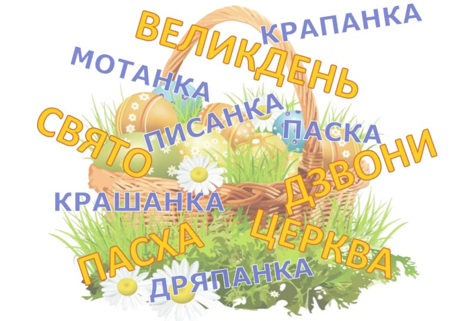

Корисні завдання
Великодні дзвони (дерев’яна дзвіниця, Закарпаття) (до с. 67 підручника)
Хмара “Великодні слова” (до с. 67 підручника)
Обговоріть слова, які для вас є новими?
Українські писанки (до с. 68 підручника)
Як прикрашені великодні яйця (до с. 69 підручника)
Дізнаємося про різні способи прикрашання великодніх яєць
Утвори великодній вислів (до с. 72 підручника)
Складаємо речення з поданих слів і пояснюємо його зміст
Великодній кросворд (до с. 72 підручника)